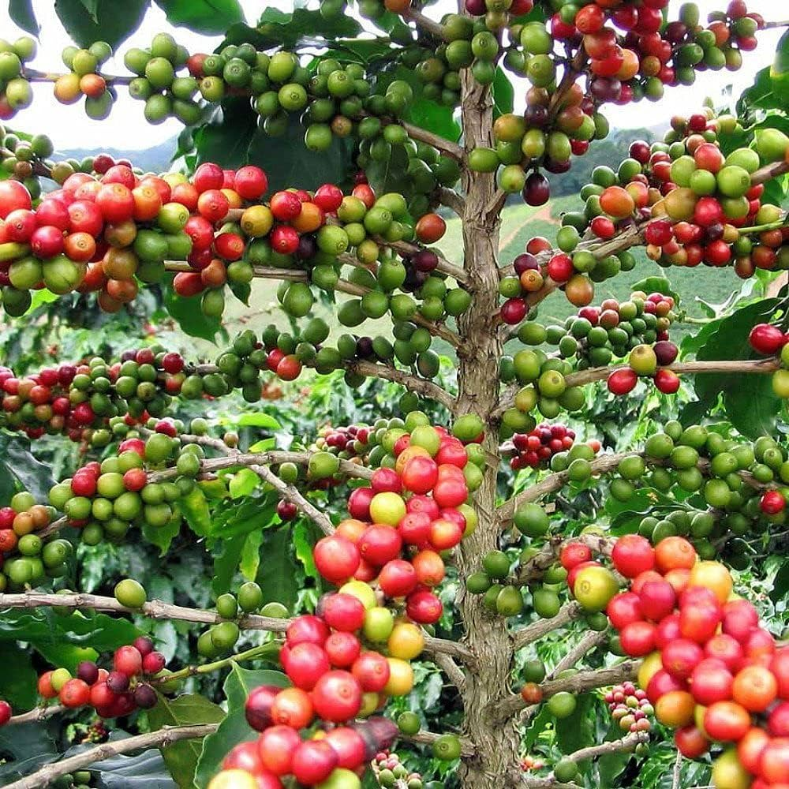
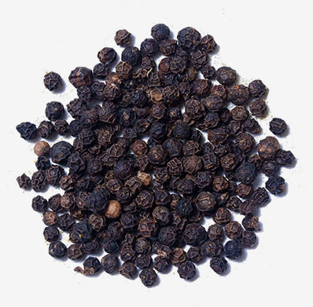
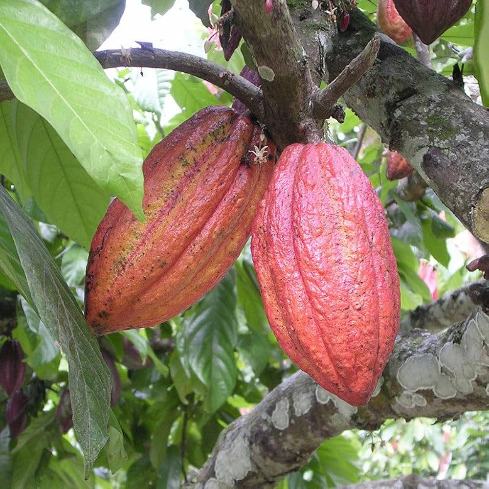

Forest Soil — crops, growth info & seed calculator
Forest soils are generally rich in organic matter and support shade-loving crops and many tree species. Below: typical plants that are commonly grown/associated with forest or agroforestry settings, growth time, suitable climate and seed/seedling guidance.
Common forest / agroforest crops
| Crop | Climate & growth | Density / seed rate (typical) |
|---|---|---|
|

Coffee (Arabica)
shade-grown, tree
|
Tropical/subtropical highlands, 1400–2000 mm rainfall, moderate temperatures. First bearing in ~3–4 years; peak in 4–8 years.
|
~2,420 plants / acre (spacing & mechanization patterns vary). Seedlings/saplings commonly used (not raw seed). Typical seedling price varies by nursery / region. :contentReference[oaicite:0]{index=0}
|

Tea (Camellia sinensis)
shrub plantation / small trees
|
Humid, high rainfall (1500–2500 mm), mild temps. Tea bushes begin plucking from ~3 years; commercial returns after 4–5 years.
|
~4,000–20,000 plants / acre depending on system (single/double hedge & clone). Use nursery saplings. :contentReference[oaicite:1]{index=1}
|

Cardamom (Elettaria/cardamom)
shade-loving understory spice
|
Humid, shaded tropical forest floor; gestation ~2–3 years; full production often after 4–5 years.
|
~445 plants/acre (≈1100 plants/ha) is a typical figure used in regional project analyses. Planting material cost & nursery seedling size vary. :contentReference[oaicite:2]{index=2}
|
|

Black pepper (Piper nigrum)
vine planted on supports/trees
|
Tropical humid climates; vines start bearing in 2–3 years, best yields after 4–6 years; long-lived perennial (20+ years).
|
~880 vines/acre is a figure used in national project DPRs; planting material cost per acre can be small when using rooted cuttings (state subsidies vary). :contentReference[oaicite:3]{index=3}
|
|

Cocoa (Theobroma cacao)
shade tree intercrop
|
Humid tropical lowlands (hot & humid). Trees start fruiting in ~2–4 years; full production later. Often grown under shade trees in agroforestry systems.
|
commonly 400–800 plants/acre (varies). Seedling prices depend on variety and nursery. :contentReference[oaicite:4]{index=4}
|
|
Bamboo (commercial clumping species)
fast-growing forest grass
|
Many species suit tropical/subtropical areas. Culms begin in 1–3 years; commercial harvesting 5–7 years onward for many species.
|
~150–300 plants/acre commonly used (depends on species). Establishment costs vary; harvests start around year 5–7. :contentReference[oaicite:5]{index=5}
|
Key sources for densities / economics (verify for your region):
- Coffee planting designs (Coffee Board of India) and nursery listings for seedling pricing. :contentReference[oaicite:6]{index=6}
- Tea planting density guidance and Tea Board weekly price info. :contentReference[oaicite:7]{index=7}
- Cardamom cost-of-cultivation reports (regional PDF) and practical guides. :contentReference[oaicite:8]{index=8}
- Black pepper DPR (NHB) — plants per acre & planting material cost examples. :contentReference[oaicite:9]{index=9}
- Cocoa and bamboo regional economics & establishment notes. :contentReference[oaicite:10]{index=10}
Note: crop densities vary by varietal, terrain, and local practice. Always check local extension services / nurseries for the exact seedling size and recommended spacing for your variety.